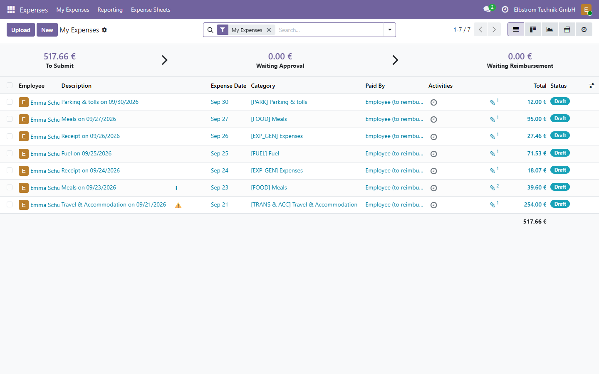
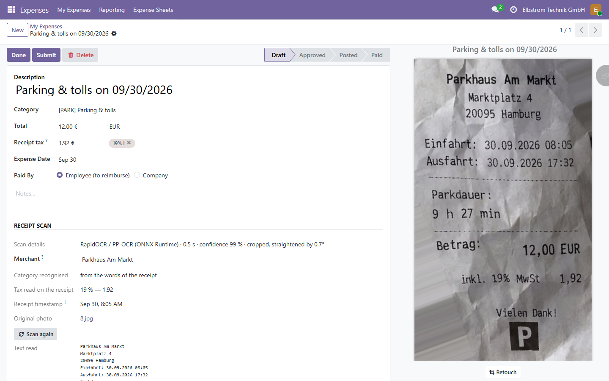
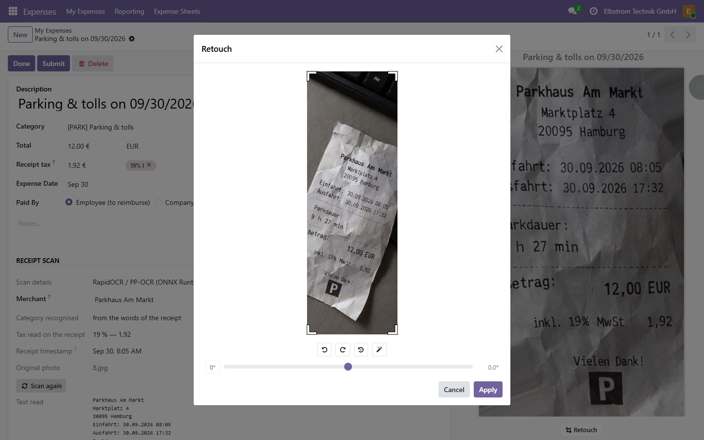
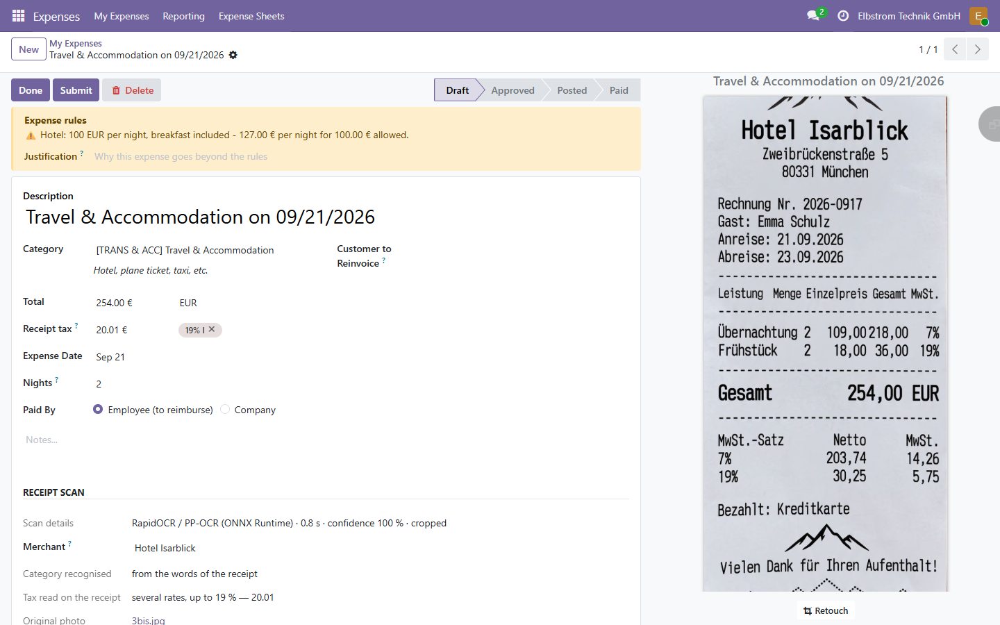
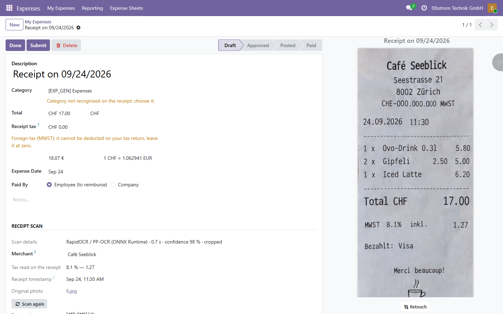
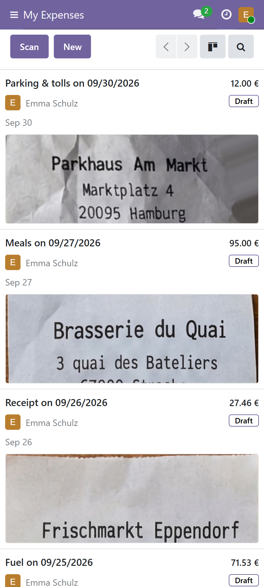
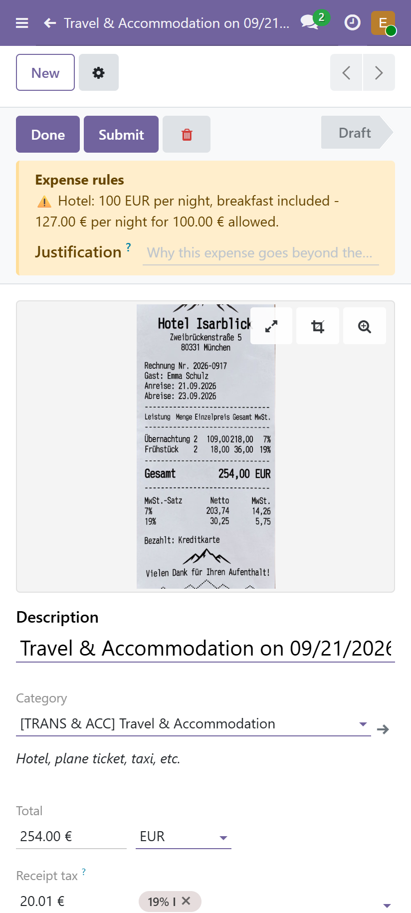
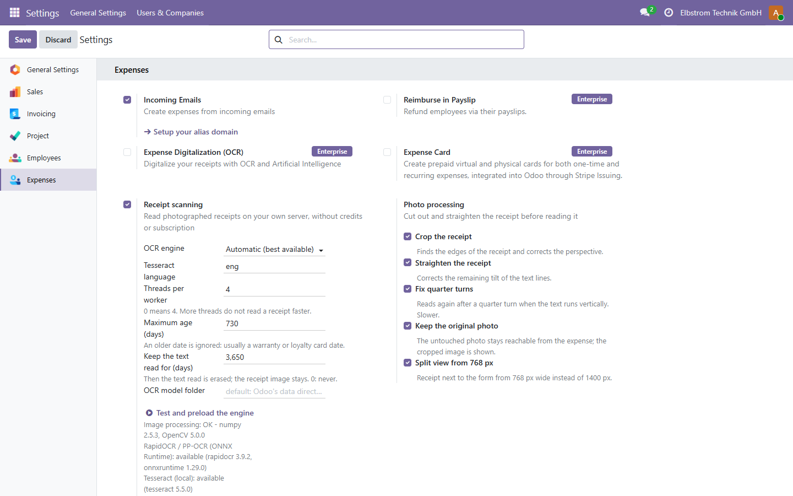

In pictures
Every receipt of a trip, filed and checked

Parking, fuel, meals and hotel recognised; ⚠ on the hotel above the company's ceiling, ℹ︎ on the meal with wine.
A crumpled photo taken at an angle

Cut out, straightened and read on its own. When the photo is really bad, the retouch tool rotates and crops it in the browser:

Expense rules that warn without blocking

Two nights read on the hotel bill: 127 € a night for 100 € allowed. The employee writes a justification; the manager reads it when approving.

Receipts from abroad

A Swiss café for a German company: recorded in francs, converted at the European Central Bank rate of 24 September, the Swiss VAT left out of the deductible tax.
On a phone


Settings
